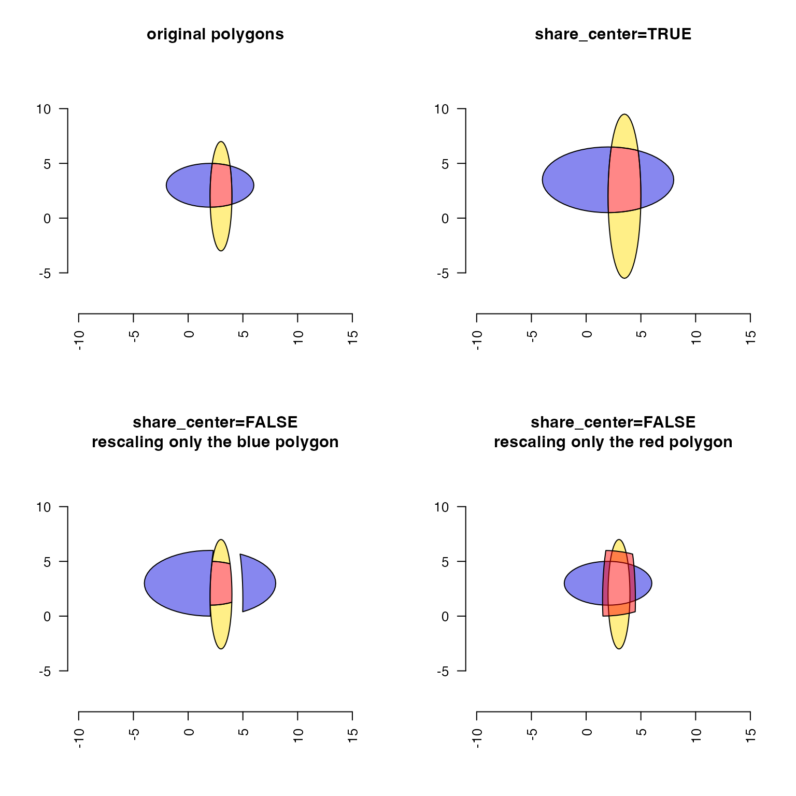
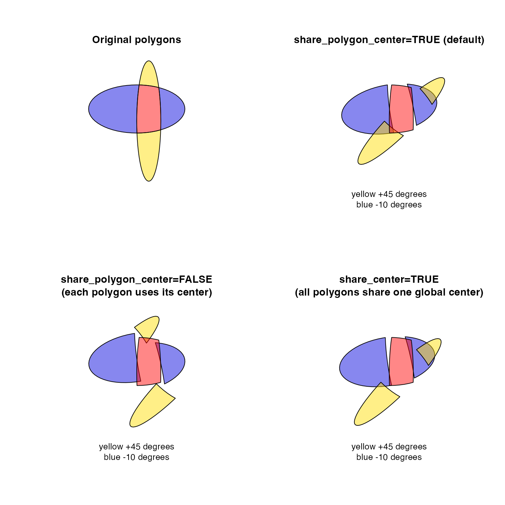

Rescale a SpatialPolygons object
numeric value in degrees indicating
rotation around the center, where positive values are
clockwise rotation. This rotation is only applied to two
columns in x defined by rotation_axes.
numeric vector whose values are expanded to length
ncol(x). After subtracting the center, the coordinates
in each column are multiplied by the scale.
numeric vector whose values are expanded to length
ncol(x). The coordinates in each column are added to
the shift, after applying scale and rotate_degrees
numeric vector whose values are expanded to length
ncol(x), indicating the center point used for scale and
rotate_degrees transformations. When center=NULL it
is derived from the bounding box, which is the mean of the range
for each column in x.
logical indicating whether all polygons
should share the same center, where share_center=TRUE will
adjust everything collectively, and share_center=FALSE will
adjust each polygon independently relative to its own center
coordinate.
additional arguments are ignored.
object sp::SpatialPolygons
object sp::SpatialPolygons
This function simply applies rescale_coordinates() to an
object sp::SpatialPolygons, and it does so by calling
rescale_ps on each sp::Polygons object contained in
the sp input.
Other venndir spatial:
degrees_to_adj(),
diff_degrees(),
display_angles(),
get_largest_polygon(),
get_sp_buffer(),
intersect_polygons(),
mean_degree_arc(),
mean_degrees(),
nudge_sp(),
rescale_coordinates(),
sp_circles(),
sp_ellipses(),
spread_degrees(),
union_polygons()
sp <- sp_ellipses(c(3, 2), c(2, 3),
xradius=c(1, 4),
yradius=c(5, 2))
sp1 <- intersect_polygons(sp);
sp2 <- rgeos::gDifference(sp[1], sp[2]);
sp3 <- rgeos::gDifference(sp[2], sp[1]);
sp123 <- sp::rbind.SpatialPolygons(sp1, sp2, sp3, makeUniqueIDs=TRUE);
sp123a <- rescale_sp(sp123,
scale=c(1.5, 1.5),
share_center=TRUE);
sp123b <- rescale_sp(sp123,
scale=c(1.5, 1.5));
col3 <- c("#FF000077", "#FFDD0077", "#0000DD77");
par("mfrow"=c(2, 2));
plot(sp123, col=col3,
main="original polygons",
xlim=c(-10, 15), ylim=c(-5, 10));
axis(1, las=2); axis(2, las=2);
plot(sp123a, col=col3,
main="share_center=TRUE",
xlim=c(-10, 15), ylim=c(-5, 10));
axis(1, las=2); axis(2, las=2);
plot(sp123[1:2], col=col3[1:2],
main="share_center=FALSE\nrescaling only the blue polygon",
xlim=c(-10, 15), ylim=c(-5, 10));
axis(1, las=2); axis(2, las=2);
plot(sp123b[3], col=col3[3],
add=TRUE);
plot(sp123[2:3], col=col3[2:3],
main="share_center=FALSE\nrescaling only the red polygon",
xlim=c(-10, 15), ylim=c(-5, 10));
axis(1, las=2); axis(2, las=2);
plot(sp123b[1], col=col3[1],
add=TRUE);

par("mfrow"=c(1, 1));
{par("mfrow"=c(2, 2));
plot(sp123, col=col3,
xlim=c(-4, 8), ylim=c(-4, 8))
title(main="Original polygons", line=0);
plot(rescale_sp(sp123, rotate_degrees=c(`11`=45, `12`=-10)), col=col3,
xlim=c(-4, 8), ylim=c(-4, 8))
title(sub="yellow +45 degrees\nblue -10 degrees", line=0,
main="share_polygon_center=TRUE (default)")
plot(rescale_sp(sp123, rotate_degrees=c(`11`=45, `12`=-10), share_polygon_center=FALSE), col=col3,
xlim=c(-4, 8), ylim=c(-4, 8))
title(sub="yellow +45 degrees\nblue -10 degrees", line=0,
main="share_polygon_center=FALSE\n(each polygon uses its center)")
plot(rescale_sp(sp123, rotate_degrees=c(`11`=45, `12`=-10), share_center=TRUE), col=col3,
xlim=c(-4, 8), ylim=c(-4, 8))
title(sub="yellow +45 degrees\nblue -10 degrees", line=0,
main="share_center=TRUE\n(all polygons share one global center)")
par("mfrow"=c(1, 1));}
